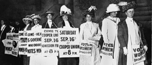

|
Liberate the women
by Lindsie Taylor
TAY01027@BYUI.EDU
Scroll Staff
 |
| A line of women rally for women's suffrage and advertise a free rally discussing women's right to vote in Washington, D.C., Oct. 3, 1915. AP Photo Archive |
|
Fair employment, land ownership, the right to vote.
For women, these simple acts have not always been that simple, and until 80 years ago, they were downright hard to do.
But from the efforts of two women, Susan B. Anthony and Elizabeth Cady Stanton, the Women’s Liberation Movement was pushed forward, making these rights available to everyone, no matter the gender.
As was the way of life throughout western civilization, women had limited roles in society, other than that of mothers and wives. Up until the 19th century, belief that women were inferior and unable to make educated decisions concerning government.
When the Industrial Revolution began in the 19th century, men were led to seek employment outside of the home, in cities and in factories, while women stayed at home. Because of influences from war, slavery and the Prohibition Act, women later took a role fighting with the abolition and temperance movements.
As an abolitionist attending the World Anti-slavery Convention in 1840, Stanton was appalled that she, along with seven other women, were not allowed to take part in the convention. The debate went on for eight days, until the women were allowed to sit behind the curtain and listen, denied the right to speak and view the proceedings.
The convention was only one such instance that women were not allowed to take part in political or governmental rights. The inequality had been going on for years, prohibiting women from owning land, voting and taking part in political issues. These were the main reasons Stanton, along with fellow supporter Lucretia Coffin Mott, held the first women’s rights convention in the United States. The convention was known as the Seneca Falls Convention, held in Seneca Falls, New York.
An average of 200 women and 40 men attended the convention where Stanton drafted a Declaration of Sentiments, modeled after the U.S. Declaration of Independence. In it she declared that “men and women are created equal.”
The Seneca Falls Convention created an uproar among the media, and many newspapers responded with ridicule to women who joined the cause. These women, called suffragists, were called the Shrieking Sisterhood, and were accused of immorality and drunkenness.
When Stanton met Anthony at a temperance meeting in 1851, a friendship formed that strengthened the suffrage movement. From 1854 to 1860, the two focused on changing the laws in New York that discriminated against women. Anthony would organize women across the state, delivering speeches Stanton wrote, while Stanton raised her children.
As another effort the two women used to fight for suffragism, Anthony and Stanton published a newspaper, Revolution, from 1868 to 1870 that focused on injustices done to women. In 1869, the two women organized the National Woman Suffrage Association that worked on changing the Constitution so women could have the right to vote.
After the 15th Amendment was passed in 1870, which allowed newly freed slaves to vote but still banned women their right, Anthony further pledged her cause. She led 12 women to the polls and persuaded election inspectors in Rochester to let them vote.
Two weeks after casting their votes, the 13 women and the two election inspectors were arrested. During the trial, the judge, afraid of a jury verdict in Anthony’s favor, dismissed the case and fined Anthony $100. She refused to pay the fines, and the judge, again afraid she would appeal the case, dropped the fine.
The ordeal’s infamy, along with constant pressure caused by the National American Woman Suffrage Association and the 500,000 signatures they gathered in a petition against urging legislation, caused many states to grant women’s suffrage rights, including Colorado, Utah, Washington and Idaho, by 1910.
Anthony and Stanton, although their efforts were not left unseen, did not get to see those efforts in motion as the 19th Amendment was made to the United States Constitution, which allowed the women the right to vote.
Although the Suffrage Amendment let women vote, it was only the beginning of a bigger movement: equal rights between men and women. Known as the Equal Rights Amendment, this movement fought to make any form of discrimination based on gender illegal. Introduced by Congress in 1923 and fought until its second defeat in 1972, the ERA was only one of the many ways women have continued to fight for equality.
|